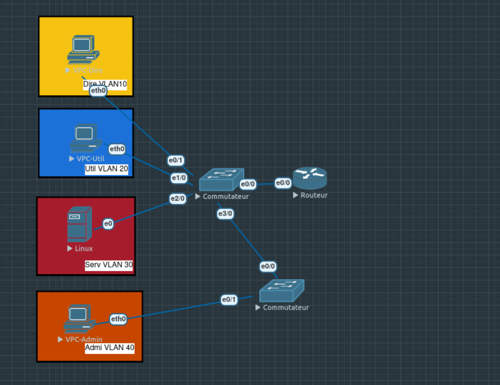

SAÉ 1.02 - S'initier aux réseaux informatiques
Semestre 1 · EVE-NG · Réseau d'entreprise simulé

Projet pédagogique : conception d’une infrastructure réseau simulée pour maîtriser segmentation, trunks et services essentiels.
En bref :
Approche pratique pour aborder la topologie multi‑équipements et valider la connectivité inter‑sous‑réseaux.
Contexte
Formation pratique sur la création et la gestion d’un réseau d’entreprise simulé (EVE‑NG) pour valider des configurations opérationnelles.
Objectifs techniques
- Concevoir une topologie multi‑switch fiable
- Implémenter VLANs et trunks
- Configurer le routage inter‑VLAN
- Déployer un serveur DHCP fonctionnel
- Exploration du protocole VTP pour gestion centralisée
Réalisations
- Topologie opérationnelle sous EVE‑NG
- VLANs et trunks configurés et testés
- Routage inter‑VLAN fonctionnel
- Serveur DHCP déployé
- Tests de gestion centralisée via VTP
Compétences mobilisées
- Lecture et compréhension d’une architecture réseau.
- Configuration de base sur équipements Cisco.
- Gestion des VLAN et des trunks.
- Routage inter-VLAN et tests de connectivité.
- Analyse méthodique et travail en environnement simulé.
Acquis d'apprentissage
- AC11.02 — Analyser l'architecture et les principes des systèmes numériques et de l'Internet
- AC11.03 — Configurer les fonctions de base d'un réseau local
- AC11.04 — Gérer les systèmes d'exploitation pour administrer les réseaux et services
Bilan
Acquisition des réflexes de conception réseau et renforcement des compétences de configuration et de test en environnement simulé.
Technologies utilisées
- EVE-NG
- Cisco
- VLAN
- Trunk
- DHCP
- VTP
- Inter-VLAN Routing